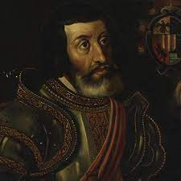
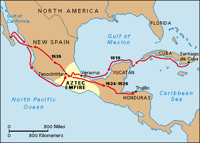

Hernan Cortes is a Spanish Conquistador famous for leading the expedition to modern-day Mexico and conquering the Aztec Empire.

Hernán Cortés de Monroy y Pizarro Altamirano
His father was Martín Cortés de Monroy, a captain in the Spanish army and his mother was Catalina Pizarro Altamirano. He came from an influential family.
When Hernando turned 14, He was sent to law school in Salamanca by his father.While in Salamanca, Hernando studied Latin instead and worked as a lawyer although he did not attend law classes.
Cortes sailed for the New World in 1504. He first arrived on the island of Hispaniola at the city of Santo Domingo. He got a job as a notary and over the next five years made a name for himself on the island.

Hernán Cortés map of exploration
After conquering the Aztecs, Cortes renamed the city of Tenochtitlan to Mexico City. The city became the Spanish capital of the territory which was called New Spain. Cortes was named governor of the land by King Charles I of Spain.
TIMELINE
1485:
Cortes is born in Medellin Spain to an infantry captain and his wife.
1499:
Cortes studies Latin.
1504:
Cortes leaves for the New World.
1506:
Cortes participates in the conquest of Hispaniola and Cuba.
1511:
Cortes joins an expedition to Cuba.
Nov 18, 1518:
Cortes sets sail for Mexico.
March 4, 1519
Cortes reaches Mexican coastt
1521
Cortes defeats the Aztecs.
August 13, 1521
Cortes establishes Mexico City.
1522
Cortes appointed governor.
1536
Francis Drake dies on his ship in the Carribbean.
December 2, 1547:
Cortes dies in Castilleja de la Cuesta, Spain due to a fatal case of pleurisy.